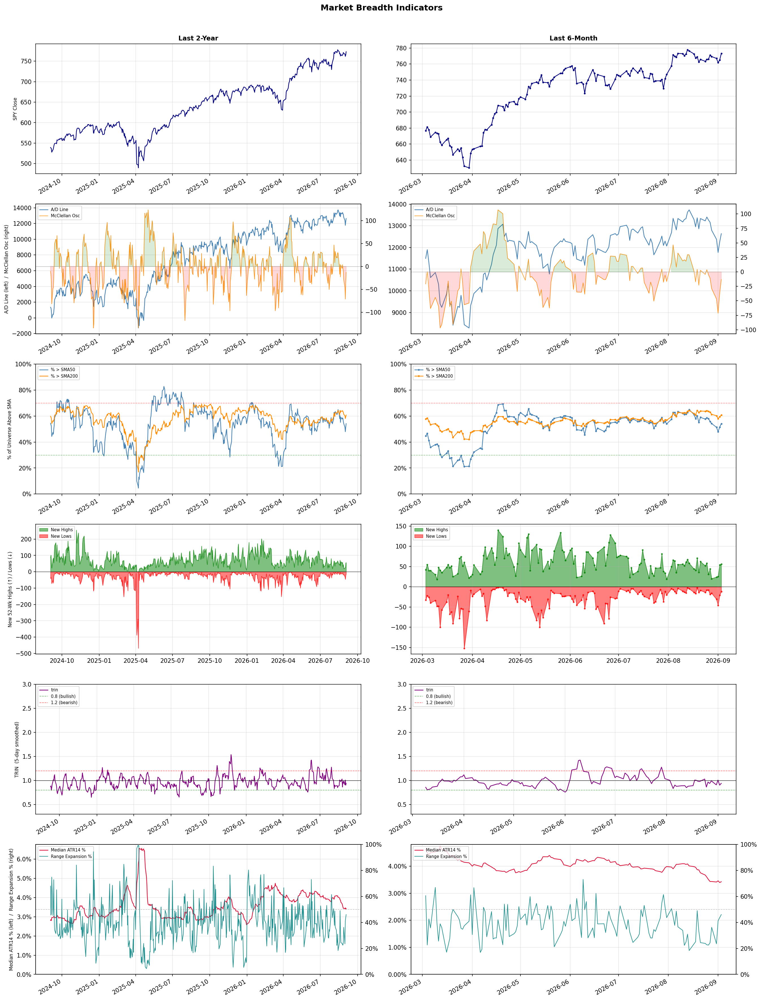

A daily market breadth and sector rotation report for active investors
| Item | Read |
|---|---|
| Regime | Selective Risk-On |
| Risk posture | Selective |
| Universe | 1,330 stocks tracked · 56 new 52-week highs · 30 active swing setups |
| Breadth | 54.2% of tracked stocks are above SMA50 — neutral range, new highs exceed new lows (56 vs 12), McClellan oscillator (breadth momentum) is negative at -13.2 |
| Leadership | Oil & Gas Refining & Marketing, Diagnostics & Research, and Health Information Services |
| Weakest groups | Footwear & Accessories, Solar, and Electrical Equipment & Parts |
Use this report to prioritize research and chart review; validate entries, stops, liquidity, earnings, and risk before acting.
| Item | Read |
|---|---|
| Primary read | Selective Risk-On regime with Selective risk posture. |
| Research queue | PBF, DINO, MPC, VLO, PSX |
| Leadership focus | Oil & Gas Refining & Marketing, Diagnostics & Research, and Health Information Services |
| Caution list | Footwear & Accessories, Solar, and Electrical Equipment & Parts |
| Review prompt | Check extension risk, chart location, fundamentals, valuation, and earnings before using any research row. |
| Item | Read |
|---|---|
| Primary read | 1 active risk warnings; use screen output as watchlist input only. |
| Bullish screens | DINO, MPC, UGP, RNG, STRC |
| Bearish screens | AS |
| Alerts / levels | Automated trigger, stop, ATR, liquidity, reward/risk, and event-risk levels are pending future enrichment. |
| Review prompt | Open the linked chart, define trigger and invalidation, then check liquidity and event risk independently. |
Risk Posture: Selective — screen backdrop supports selective research in leading industries
Metric context: McClellan below -50 = elevated selling pressure; below -100 = washout territory. Range Expansion = share of stocks with daily range above their 20-day average. Signal Density = share of tracked names appearing in signal screens.
| Breadth Date | % > SMA50 | % > SMA200 | New Highs | New Lows | McClellan | Median Range | Avg Range | Median ATR14 | Range Expansion | Signal Density |
|---|---|---|---|---|---|---|---|---|---|---|
| 2026-09-03 | 54.2% | 60.8% | 56 | 12 | -13.2 | 3.1% | 3.6% | 3.4% | 46.0% | 1.2% |

Prior comparison date: September 2, 2026
| Metric | Prior | Current | Change |
|---|---|---|---|
| Regime | Defensive | Selective Risk-On | changed |
| Risk Posture | Defensive | Selective | changed |
| % > SMA50 | 40.8% | 54.2% | +13.3 pts |
| % > SMA200 | 40.8% | 60.8% | +19.9 pts |
| New Highs | 1 | 56 | +55 |
| New Lows | 2 | 12 | -10 |
Top-10 industries entering: Banks - Diversified, Financial Data & Stock Exchanges, and Software - Application. Top-10 industries leaving: Biotechnology, Copper, and Insurance Brokers. New multi-signal long setups: AMGN, BBVA, BNS, BNY, DB, DHT, DINO, DLO, EXEL. New multi-signal short setups: AS.
| Status | Tickers | Read |
|---|---|---|
| Added | AEM, APPS, AS, BBVA, BNS, BNY, DB, DHT | New technical screen matches vs prior report. |
| Removed | AU, AVTX, CF, CTVA, CVX, EGO, FMC, IBRX | No longer present in today's technical screen matches. |
| Still Active | AMGN, DINO, DXYZ, MPC, RNG, TGB, TNDM | Appeared in both current and prior reports. |
| Promoted | AMGN, DINO, MPC, RNG | Model Screen Score improved by at least 15 points. |
| Downgraded | none | Model Screen Score declined by at least 15 points. |
| Direction | Industry | ETF | Prior Rank | Current Rank | Days | Rank Change |
|---|---|---|---|---|---|---|
| Rose | Gold | GDX | 79 | 4 | 42 | +75 |
| Rose | Uranium | URA | 88 | 23 | 42 | +65 |
| Rose | Capital Markets | KCE | 73 | 15 | 28 | +58 |
| Rose | Steel | SLX | 75 | 18 | 14 | +57 |
| Rose | Agricultural Inputs | N/A | 59 | 6 | 28 | +53 |
Bull: Gold is experiencing a rise in relative strength primarily due to its status as a safe-haven asset amid economic uncertainty, which has been highlighted in recent headlines discussing the performance of gold miners versus gold itself. The mention of gold sitting near $4,270 while miners remain 22% below their peak suggests a potential catch-up trade, indicating that investors may be shifting focus towards undervalued mining stocks like those in the GDX ETF. Additionally, the ongoing discussions about the best ways to invest in gold, particularly in retirement accounts, reflect a growing recognition of gold's role as a hedge against inflation and market volatility, further driving interest in the sector.
Bear: While the bull thesis highlights gold's status as a safe-haven asset, it overlooks the inherent risks and volatility associated with gold mining stocks, which can significantly underperform the underlying commodity due to operational challenges, exploration risks, and funding needs, as evidenced by the recent slide in 1911 Gold's stock. Additionally, the 22% gap between miners and gold prices may reflect not just undervaluation but also market skepticism about the miners' ability to generate sustainable profits amid rising costs and geopolitical uncertainties, suggesting that the catch-up trade may not materialize as anticipated.
Verdict: The rising trend in the gold industry is primarily driven by its appeal as a safe-haven asset amid economic uncertainty, with investors increasingly recognizing gold's role in hedging against inflation and market volatility. However, a key risk to consider is the potential underperformance of gold mining stocks due to operational challenges and market skepticism about their profitability, which could hinder the anticipated catch-up trade with gold prices. Investors should weigh these dynamics carefully when considering exposure to gold and mining stocks.
Sources: Yahoo Finance, Google News
Bull: The rising relative strength of uranium, as indicated by the recent headlines, can be attributed to a renewed investor interest in nuclear energy as a stable and clean power source amidst broader market volatility. The rebound in nuclear stocks, highlighted by significant gains in companies like Uranium Energy and the overall positive sentiment towards uranium plays, suggests that market participants are increasingly recognizing the potential of nuclear energy to meet growing energy demands and transition away from fossil fuels. Additionally, the separation of uranium stocks from the broader sector indicates a shift in risk appetite towards more sustainable energy solutions, further driving interest and investment in this industry.
Bear: While the recent uptick in uranium stocks may suggest a growing interest in nuclear energy, this rebound could be more reflective of short-term market volatility rather than a sustainable trend. The significant setbacks faced by companies like Oklo and NuScale Power, including project cancellations and operational challenges, highlight the inherent risks and uncertainties in the nuclear sector. Additionally, the broader energy landscape remains dominated by cheaper and more flexible alternatives, such as renewables and natural gas, which could limit the long-term viability and investment in uranium as a primary energy source.
Verdict: The recent rise in uranium stocks is primarily driven by a renewed investor interest in nuclear energy as a stable and clean alternative amid broader market volatility, with companies like Uranium Energy showing significant gains. However, key risks remain, particularly the operational challenges and project setbacks faced by firms like Oklo and NuScale Power, which could undermine the long-term viability of uranium investments if cheaper alternatives continue to dominate the energy landscape. Investors should remain cautious and closely monitor developments in both the nuclear sector and competing energy sources.
Sources: Yahoo Finance, Google News
Bull: The Capital Markets sector, represented by the SPDR S&P Capital Markets ETF (KCE), is likely experiencing rising relative strength due to a combination of robust stock performance among key players, such as Interactive Brokers, and positive sentiment reflected in recent analyses from institutions like J.P. Morgan and Morningstar, which highlight growth potential across various stock sectors. Additionally, the broader market outlook, as suggested by the Nasdaq stock commentary, indicates a bullish sentiment that is likely benefiting capital markets, positioning them favorably amidst ongoing economic resilience.
Bear: While the bull thesis highlights rising relative strength and positive sentiment, it overlooks several critical headwinds facing the Capital Markets sector. Rising interest rates and inflationary pressures could dampen trading volumes and investment activity, as higher borrowing costs deter capital flows. Furthermore, the recent volatility in the broader market, coupled with potential regulatory challenges and geopolitical uncertainties, may undermine the sustainability of the current performance, suggesting that any bullish sentiment could be overly optimistic.
Verdict: The Capital Markets sector is likely experiencing rising relative strength due to strong stock performance from key players and positive institutional sentiment, reflecting growth potential amid economic resilience. However, investors should remain cautious of key risks, including rising interest rates and inflationary pressures, which could dampen trading volumes and investment activity, potentially undermining the sustainability of this bullish trend.
Sources: Yahoo Finance, Google News
Bull: The rising relative strength of the steel industry, as evidenced by the Steel ETF (SLX) hitting new 52-week highs, can be attributed to increasing demand driven by the AI sector and infrastructure projects, which are fueling growth in steel consumption. Additionally, the competitive performance of key players like Nucor and Steel Dynamics indicates strong fundamentals within the sector, further attracting investor interest and confidence in the industry's growth trajectory.
Bear: While the rising relative strength of the steel industry and the recent highs in the Steel ETF (SLX) may suggest optimism, this enthusiasm overlooks potential headwinds such as increasing global steel production capacity, which could lead to oversupply and price pressures. Additionally, the reliance on the AI sector and infrastructure projects may prove to be cyclical and vulnerable to economic downturns, undermining the sustainability of demand for steel in the long term.
Verdict: The steel industry's recent rise, highlighted by the Steel ETF (SLX) reaching new 52-week highs, is fundamentally driven by robust demand from the AI sector and ongoing infrastructure projects, signaling strong growth potential. However, investors should remain cautious of the bear case, which warns that increasing global steel production capacity could lead to oversupply and price pressures, potentially undermining the sector's long-term sustainability. As such, monitoring production levels and economic indicators will be crucial for assessing future investment decisions in the steel industry.
Sources: Yahoo Finance, Google News
Bull: The Agricultural Inputs sector is experiencing rising relative strength primarily due to increasing momentum in economically sensitive materials, as highlighted by the Seeking Alpha article. Additionally, the recent surge in Corteva's stock reflects growing investor confidence in the agricultural sector, suggesting strong demand for agricultural inputs driven by favorable market conditions. Furthermore, with more than half of the basic materials sector, which includes agricultural inputs, being undervalued according to Morningstar, there are significant opportunities for growth, further bolstering the sector's attractiveness.
Bear: While the agricultural inputs sector may currently exhibit rising relative strength and some positive momentum, this could be misleading given the cyclical nature of the industry and potential headwinds such as rising input costs, supply chain disruptions, and adverse weather conditions that could impact crop yields. Additionally, the recent surge in Corteva's stock may be more reflective of short-term trading dynamics rather than sustainable demand growth, and the claim of undervaluation in the basic materials sector could be an indication of broader economic concerns rather than a genuine opportunity for growth. Investors should remain cautious, as these factors could undermine the sector's long-term viability.
Verdict: The agricultural inputs sector is likely experiencing a rise in relative strength due to increasing demand driven by favorable market conditions and investor confidence, as evidenced by Corteva's stock performance. However, key risks such as rising input costs, supply chain disruptions, and adverse weather conditions could significantly undermine long-term growth prospects, necessitating a cautious approach for investors. It is advisable to monitor these potential headwinds closely while considering positions in this sector.
Sources: Google News
| Direction | Industry | ETF | Prior Rank | Current Rank | Days | Rank Change |
|---|---|---|---|---|---|---|
| Fell | REIT - Retail | N/A | 13 | 71 | 35 | -58 |
| Fell | Airlines | N/A | 26 | 83 | 28 | -57 |
| Fell | REIT - Hotel & Motel | XLRE | 3 | 58 | 35 | -55 |
| Fell | Leisure | N/A | 11 | 66 | 35 | -55 |
| Fell | Travel Services | N/A | 9 | 62 | 28 | -53 |
Bear: While the bull analyst highlights a focus on income stability as a reason for shifting investor sentiment, it overlooks the fundamental challenges facing the retail sector, including rising e-commerce competition and changing consumer preferences that could undermine the long-term viability of retail REITs. Additionally, the falling relative-strength trend indicates a broader lack of confidence in the sector, suggesting that even stable income may not be enough to attract investors amid economic uncertainties and potential declines in foot traffic to physical retail locations.
Bull: The relative weakness in the Retail REIT sector can be attributed to broader market concerns about retail performance amid changing consumer behaviors and economic uncertainties, as highlighted in the Seeking Alpha article discussing out-of-favor REIT sectors. Additionally, the focus on income stability, as noted in the AD HOC NEWS report on CPNREIT, suggests that investors may be prioritizing more stable income-generating assets, leading to a shift away from retail-focused REITs. This sentiment is further reinforced by discussions comparing the strengths of different REITs, indicating a cautious approach among investors.
Verdict: The Retail REIT sector is experiencing a downturn primarily due to fundamental challenges such as increasing e-commerce competition and shifting consumer preferences, which threaten the long-term viability of physical retail spaces. While some investors may prioritize income stability, the bear case highlights a critical risk: the declining foot traffic to brick-and-mortar stores could further erode confidence in retail REITs, making it essential for investors to reassess their exposure to this sector amid ongoing economic uncertainties. To mitigate risk, investors should consider diversifying into more resilient sectors or REITs that adapt to evolving consumer behaviors.
Sources: Google News
Bear: While the bull thesis suggests a rebound is on the horizon, the airline industry's structural issues, including persistently high fuel costs, labor shortages, and geopolitical tensions, are unlikely to resolve quickly. Additionally, the recent 14% drop in Southwest Airlines' stock reflects deeper market concerns about profitability and operational efficiency, which could signal a prolonged period of volatility rather than a recovery. Investors should be wary of the potential for further declines as these challenges persist, overshadowing any long-term growth narratives.
Bull: The airline industry is currently experiencing a decline in relative strength primarily due to heightened concerns over operational challenges and market volatility, as indicated by headlines discussing significant stock drops, such as Southwest Airlines' 14% decline in a month. Factors such as rising fuel costs, labor shortages, and ongoing geopolitical tensions are likely contributing to investor uncertainty, leading to cautious sentiment in the sector despite potential long-term growth opportunities highlighted by analysts. However, with the industry expected to rebound as travel demand stabilizes and operational efficiencies improve, this presents a compelling buying opportunity for investors looking at the long-term potential of airline stocks.
Verdict: The airline industry's current decline is fundamentally driven by escalating operational challenges, including high fuel costs and labor shortages, which are exacerbated by ongoing geopolitical tensions, leading to heightened market volatility and investor caution. The key risk from the bear case is that these structural issues may not resolve quickly, potentially resulting in sustained profitability concerns and further stock declines. Investors should closely monitor these operational factors and consider a cautious approach, weighing the potential for long-term growth against the immediate risks of continued volatility.
Sources: Google News
Bear: While the bull analyst attributes the Hotel & Motel REIT sector's relative weakness to a shift in investor focus towards financial stocks, this overlooks the fundamental challenges facing the hospitality industry itself, such as rising operational costs, labor shortages, and potential declines in travel demand due to economic uncertainty. Additionally, with interest rates likely to remain elevated, the cost of borrowing for hotel operators could increase, further squeezing margins and dampening growth prospects in an already volatile market. The complexities highlighted in Braemar's outlook may indicate deeper structural issues within the sector that could persist beyond the current financial market trends.
Bull: The relative weakness of the Hotel & Motel REIT sector can be attributed to the recent focus on financial stocks, which have been gaining traction in the market, overshadowing other sectors like hospitality. As indicated by multiple sector updates highlighting financial stocks' performance, investor sentiment appears to be shifting towards financials, possibly due to rising interest rates and improved economic indicators, which tend to favor financial institutions over REITs. Additionally, the complexities mentioned in Braemar's outlook and the cautious sentiment surrounding asset management in the C-REITs era suggest underlying challenges that may be contributing to the bearish sentiment in the hotel and motel segment.
Verdict: The Hotel & Motel REIT sector's decline is primarily driven by fundamental challenges such as rising operational costs, labor shortages, and potential declines in travel demand amid economic uncertainty, which are exacerbated by elevated interest rates increasing borrowing costs. Investors should be cautious, as these structural issues may persist and further impact profitability, making it essential to monitor economic indicators and operational performance closely before making investment decisions.
Sources: Yahoo Finance, Google News
Bear: While the bull analyst highlights potential opportunities within the leisure sector, the prevailing macroeconomic pressures, including rising interest rates and persistent inflation, significantly dampen consumer discretionary spending, which is crucial for the industry's recovery. Moreover, the mention of AI disruption suggests that traditional business models may be at risk, further complicating the competitive landscape and potentially leading to a reevaluation of valuations that could negatively impact investor sentiment and stock performance in the near term.
Bull: The Leisure industry is experiencing a decline in relative strength primarily due to macroeconomic pressures and shifts in consumer spending behavior, as highlighted by the recent focus on AI disruption in travel and leisure stocks. Additionally, the competitive landscape is intensifying, with specific mentions of attractive stocks in the sector, suggesting that while there are opportunities, the overall market sentiment may be cautious as investors assess the impact of economic uncertainties on discretionary spending. This environment could lead to volatility and a reassessment of valuations within the sector, as indicated by the benchmarking reports on major players like Dave & Buster's and Live Nation.
Verdict: The leisure industry is likely experiencing a decline due to macroeconomic pressures, such as rising interest rates and inflation, which are suppressing consumer discretionary spending. This environment poses a key risk, as the potential for AI disruption may further challenge traditional business models, leading to heightened volatility and a reassessment of valuations that could negatively impact investor sentiment. Investors should remain cautious and closely monitor economic indicators and shifts in consumer behavior before making significant commitments in the sector.
Sources: Google News
Bear: While the bull analyst points to economic uncertainties and mixed Q2 results as key factors for the Travel Services sector's decline, it is crucial to recognize that these challenges are exacerbated by a broader trend of rising inflation and tightening consumer budgets, which directly impact discretionary spending on travel. Additionally, the reliance on niche partnerships, like Easy Trip Planners' deal with MSTC Ltd, may suggest a lack of confidence in attracting a wider consumer base, indicating that the sector's long-term growth prospects could be further hampered by these strategic shifts and the potential for sustained economic headwinds.
Bull: The Travel Services sector is experiencing a decline in relative strength primarily due to economic uncertainties and changing consumer behaviors, as highlighted by the mixed Q2 results from key players like Norwegian Cruise Line and Travel + Leisure. Additionally, the ongoing shift towards exclusive partnerships, such as Easy Trip Planners' collaboration with MSTC Ltd for government travel, indicates a focus on niche markets rather than broad consumer demand, which may be contributing to the sector's underperformance compared to other industries.
Verdict: The Travel Services sector's decline is fundamentally driven by economic uncertainties and rising inflation, which are tightening consumer budgets and reducing discretionary spending on travel. The shift towards niche partnerships, such as Easy Trip Planners' collaboration with MSTC Ltd, may indicate a lack of confidence in appealing to a broader market, potentially hampering long-term growth. Investors should be cautious of the risk that sustained economic headwinds could further weaken consumer demand in this sector.
Sources: Google News
| Industry | Rank | ETF | 7d | 14d | 28d | 42d | Chg 42d | Size | 20D | 60D | Composite | Active Setups |
|---|---|---|---|---|---|---|---|---|---|---|---|---|
| Oil & Gas Refining & Marketing | 1 | CRAK | 9 | 3 | 1 | 1 | 0 | 7 | 20.5% | 48.9% | 0.960 | 0 |
| Diagnostics & Research | 2 | N/A | 1 | 1 | 5 | 2 | 0 | 16 | 12.9% | 36.2% | 0.959 | 0 |
| Health Information Services | 3 | N/A | 2 | 2 | 28 | 8 | +5 | 12 | 21.5% | 43.5% | 0.921 | 0 |
| Gold | 4 | GDX | 3 | 8 | 41 | 79 | +75 | 25 | 22.6% | 30.1% | 0.913 | 0 |
| Oil & Gas E&P | 5 | XOP | 12 | 10 | 44 | 21 | +16 | 26 | 15.3% | 12.6% | 0.884 | 1 |
| Agricultural Inputs | 6 | N/A | 43 | 43 | 59 | 23 | +17 | 5 | 17.4% | 20.4% | 0.862 | 0 |
| Oil & Gas Integrated | 7 | XLE | 28 | 12 | 12 | 7 | 0 | 10 | 8.1% | 10.9% | 0.848 | 0 |
| Financial Data & Stock Exchanges | 8 | N/A | 11 | 17 | 45 | 34 | +26 | 7 | 10.8% | 14.4% | 0.846 | 0 |
| Software - Application | 9 | IGV | 6 | 5 | 6 | 37 | +28 | 74 | 9.3% | 26.9% | 0.841 | 1 |
| Banks - Diversified | 10 | N/A | 20 | 34 | 4 | 6 | -4 | 16 | 3.4% | 16.5% | 0.837 | 0 |
Rank columns (7d–42d) show the industry's rank that many trading days ago — lower is stronger. Chg 42d = rank change vs 42 trading days ago — positive means the industry moved up. 20D and 60D are the mean stock return within the industry over that period. Active Setups: count of today's swing-trade candidates from this industry appearing across all signal screens.
| Industry | Rank | ETF | 7d | 14d | 28d | 42d | Chg 42d | Size | 20D | 60D | Composite | Active Setups |
|---|---|---|---|---|---|---|---|---|---|---|---|---|
| Footwear & Accessories | 88 | N/A | 88 | 86 | 70 | 65 | -23 | 5 | -13.3% | -19.4% | 0.041 | 0 |
| Solar | 87 | TAN | 87 | 87 | 86 | 84 | -3 | 8 | -10.5% | -29.4% | 0.055 | 0 |
| Electrical Equipment & Parts | 86 | XLI | 72 | 84 | 83 | 81 | -5 | 12 | -11.5% | -29.8% | 0.113 | 1 |
| Aerospace & Defense | 85 | ITA | 66 | 51 | 60 | 83 | -2 | 26 | -11.5% | -18.2% | 0.120 | 0 |
| Chemicals | 84 | N/A | 86 | 85 | 87 | 75 | -9 | 8 | -8.0% | -24.9% | 0.126 | 0 |
| Airlines | 83 | N/A | 83 | 83 | 26 | 56 | -27 | 8 | -18.1% | -6.4% | 0.130 | 0 |
| Building Products & Equipment | 82 | XHB | 67 | 72 | 40 | 54 | -28 | 8 | -9.3% | -5.9% | 0.136 | 0 |
| Resorts & Casinos | 81 | N/A | 84 | 59 | 48 | 42 | -39 | 6 | -7.2% | -10.5% | 0.142 | 0 |
| Semiconductor Equipment & Materials | 80 | SOXX | 39 | 66 | 63 | 62 | -18 | 17 | -13.4% | -15.5% | 0.146 | 0 |
| Rental & Leasing Services | 79 | N/A | 78 | 77 | 50 | 50 | -29 | 6 | -9.2% | -18.7% | 0.172 | 0 |
Rank columns (7d–42d) show the industry's rank that many trading days ago — lower is stronger. Chg 42d = rank change vs 42 trading days ago — positive means the industry moved up. 20D and 60D are the mean stock return within the industry over that period. Active Setups: count of today's swing-trade candidates from this industry appearing across all signal screens.
These are research candidates from top-ranked stocks, capped at five names per industry to avoid over-concentration. Returns shown (60D, 120D, 250D) are historical — they reflect where prices have already moved, not forward expectations. Extension Risk flags names that may require extra patience or a better entry point. They are not buy signals.
Chart: TV = TradingView chart (opens in browser); PDF = local chart file (if downloaded).
| Ticker | Name | Industry | Industry Rank | Market Cap | 60D Hist | 120D Hist | 250D Hist | Extension Risk | Research Reason | Chart |
|---|---|---|---|---|---|---|---|---|---|---|
| PBF | PBF Energy | Oil & Gas Refining & Marketing | 1 | N/A | 87.3% | 75.0% | 171.1% | Extended | Top-ranked in industry; extended | TV |
| DINO | HF Sinclair | Oil & Gas Refining & Marketing | 1 | N/A | 53.4% | 93.0% | 114.5% | Extended | Top-ranked in industry; extended | TV |
| MPC | Marathon Petroleum | Oil & Gas Refining & Marketing | 1 | N/A | 50.6% | 72.5% | 118.7% | Extended | Top-ranked in industry; extended | TV |
| VLO | Valero Energy | Oil & Gas Refining & Marketing | 1 | N/A | 46.6% | 62.1% | 141.5% | Constructive | Top-ranked in industry | TV |
| PSX | Phillips 66 | Oil & Gas Refining & Marketing | 1 | N/A | 43.0% | 49.3% | 99.3% | Constructive | Top-ranked in industry | TV |
| TWST | Twist Bioscience | Diagnostics & Research | 2 | N/A | 83.7% | 197.4% | 399.7% | Extended | Top-ranked in industry; extended | TV |
| PSNL | Personalis | Diagnostics & Research | 2 | N/A | 72.6% | 150.4% | 221.2% | Extended | Top-ranked in industry; extended | TV |
| WGS | GeneDx Holdings | Diagnostics & Research | 2 | N/A | 55.1% | 12.4% | -34.1% | Extended | Top-ranked in industry; extended | TV |
| NTRA | Natera | Diagnostics & Research | 2 | N/A | 47.1% | 74.4% | 95.0% | Constructive | Top-ranked in industry | TV |
| OPK | Opko Health | Diagnostics & Research | 2 | N/A | 11.8% | 35.3% | 19.3% | Constructive | Top-ranked in industry | TV |
| TXG | 10x Genomics | Health Information Services | 3 | N/A | 106.7% | 236.5% | 352.9% | Very extended | Top-ranked in industry; very extended | TV |
| HTFL | Heartflow | Health Information Services | 3 | N/A | 73.4% | 142.6% | 60.0% | Extended | Top-ranked in industry; extended | TV |
| VEEV | Veeva Systems | Health Information Services | 3 | N/A | 69.6% | 59.0% | 4.2% | Extended | Top-ranked in industry; extended | TV |
| DOCS | Doximity | Health Information Services | 3 | N/A | 32.5% | 11.2% | -60.9% | Constructive | Top-ranked in industry | TV |
| TEM | Tempus AI | Health Information Services | 3 | N/A | 32.4% | 29.4% | -18.8% | Constructive | Top-ranked in industry | TV |
| SSRM | SSR Mining | Gold | 4 | N/A | 51.3% | 38.1% | 84.5% | Extended | Top-ranked in industry; extended | TV |
| FSM | Fortuna Silver Mines | Gold | 4 | N/A | 47.4% | 23.0% | 65.1% | Constructive | Top-ranked in industry | TV |
| BTG | B2Gold | Gold | 4 | N/A | 42.3% | 17.9% | 37.7% | Constructive | Top-ranked in industry | TV |
| ARIS | Aris Mining | Gold | 4 | N/A | 36.3% | 10.6% | 123.9% | Constructive | Top-ranked in industry | TV |
| CDE | Coeur Mining | Gold | 4 | N/A | 34.6% | 7.4% | 47.7% | Constructive | Top-ranked in industry | TV |
These are technical screen matches from existing signal files. They are not trade recommendations. Trigger, stop, ATR, liquidity, reward/risk, and event risk still require separate validation until those inputs are available.
Model Screen Score is weighted by signal count, industry rank, freshness, and setup type. It is not a probability of profit, expected return, or suitability rating. Industry cap: max 3 candidates per industry.
Signal glossary: Momentum Pullback = stock in an uptrend that has pulled back 10–30% and shows re-entry conditions. MA Compression = short- and long-term moving averages converging, often preceding a directional move. Three-Day Up/Down = three consecutive closes in the same direction. New 52Wk High/Low = price reached a new annual extreme.
Chart: TV = TradingView chart (opens in browser); PDF = local chart file (if downloaded).
| Ticker | Industry | Setups | Close | Industry Rank | Signal Count | Model Screen Score | Reason | Chart |
|---|---|---|---|---|---|---|---|---|
| DINO | Oil & Gas Refining & Marketing | New 52Wk High; Three-Day Up | 106.15 | 1 | 2 | 100 | Multi-signal; top industry breakout | TV |
| MPC | Oil & Gas Refining & Marketing | New 52Wk High; Three-Day Up | 387.71 | 1 | 2 | 100 | Multi-signal; top industry breakout | TV |
| UGP | Oil & Gas Refining & Marketing | New 52Wk High; Three-Day Up | 7.16 | 1 | 2 | 100 | Multi-signal; top industry breakout | TV |
| RNG | Software - Application | New 52Wk High; Three-Day Up | 76.36 | 9 | 2 | 85 | Multi-signal; top industry breakout | TV |
| STRC | Software - Application | New 52Wk High; Three-Day Up | 97.82 | 9 | 2 | 85 | Multi-signal; top industry breakout | TV |
| BBVA | Banks - Diversified | New 52Wk High; Three-Day Up | 29.64 | 10 | 2 | 85 | Multi-signal; top industry breakout | TV |
| BNS | Banks - Diversified | New 52Wk High; Three-Day Up | 94.92 | 10 | 2 | 85 | Multi-signal; top industry breakout | TV |
| BNY | Banks - Diversified | New 52Wk High; Three-Day Up | 164.33 | 10 | 2 | 85 | Multi-signal; top industry breakout | TV |
| STT | Asset Management | New 52Wk High; Three-Day Up | 193.94 | 11 | 2 | 85 | Multi-signal; new-high strength | TV |
| EXEL | Biotechnology | New 52Wk High; Three-Day Up | 59.13 | 14 | 2 | 85 | Multi-signal; new-high strength | TV |
| RPRX | Biotechnology | New 52Wk High; Three-Day Up | 63.88 | 14 | 2 | 85 | Multi-signal; new-high strength | TV |
| VRTX | Biotechnology | New 52Wk High; Three-Day Up | 557.96 | 14 | 2 | 85 | Multi-signal; new-high strength | TV |
| DHT | Oil & Gas Midstream | New 52Wk High; Three-Day Up | 20.19 | 16 | 2 | 77 | Multi-signal; new-high strength | TV |
| NAT | Oil & Gas Midstream | New 52Wk High; Three-Day Up | 7.10 | 16 | 2 | 77 | Multi-signal; new-high strength | TV |
| AMGN | Drug Manufacturers - General | New 52Wk High; Three-Day Up | 444.12 | 17 | 2 | 77 | Multi-signal; new-high strength | TV |
| MT | Steel | New 52Wk High; Three-Day Up | 76.07 | 18 | 2 | 77 | Multi-signal; new-high strength | TV |
| DLO | Software - Infrastructure | New 52Wk High; Three-Day Up | 15.78 | 20 | 2 | 77 | Multi-signal; new-high strength | TV |
| RELY | Software - Infrastructure | New 52Wk High; Three-Day Up | 26.92 | 20 | 2 | 77 | Multi-signal; new-high strength | TV |
| GNW | Insurance - Life | New 52Wk High; Three-Day Up | 10.38 | 21 | 2 | 77 | Multi-signal; new-high strength | TV |
| DB | Banks - Regional | New 52Wk High; Three-Day Up | 41.56 | 42 | 2 | 65 | Multi-signal; new-high strength | TV |
| FLR | Engineering & Construction | New 52Wk High; Three-Day Up | 57.50 | 57 | 2 | 65 | Multi-signal; new-high strength | TV |
| TNDM | Medical Devices | Momentum Pullback | 20.43 | 27 | 2 | 55 | Multi-signal; pullback setup | TV |
| TXNM | Utilities - Regulated Electric | MA Compression; Three-Day Up | 58.14 | 64 | 2 | 50 | Multi-signal; compression setup | TV |
| ILMN | Diagnostics & Research | Three-Day Up | 221.66 | 2 | 1 | 55 | Single-signal; top industry setup | TV |
| WGS | Diagnostics & Research | Three-Day Up | 87.39 | 2 | 1 | 55 | Single-signal; top industry setup | TV |
| APPS | Software - Application | Momentum Pullback | 10.88 | 9 | 1 | 50 | Single-signal; top industry pullback | TV |
| DXYZ | Asset Management | Momentum Pullback | 32.25 | 11 | 1 | 50 | Single-signal; pullback setup | TV |
| TGB | Copper | Momentum Pullback | 8.40 | 12 | 1 | 50 | Single-signal; pullback setup | TV |
| AEM | Gold | Three-Day Up | 207.13 | 4 | 1 | 48 | Single-signal; top industry setup | TV |
Bearish setups — stocks making new lows or showing persistent downside patterns. Validate carefully before acting.
| Ticker | Industry | Setups | Close | Industry Rank | Signal Count | Model Screen Score | Reason | Chart |
|---|---|---|---|---|---|---|---|---|
| AS | Leisure | New 52Wk Low; Three-Day Down | 28.51 | 66 | 2 | 25 | Multi-signal; new-low weakness | TV |
How To Use This Report
| Use | Purpose |
|---|---|
| Market map | Start with breadth, regime, risk warnings, and what changed since the prior report. |
| Industry scan | Use leading, deteriorating, rising, and declining industries to focus research. |
| Research queue | Treat long-term candidates as names for deeper fundamental, valuation, and chart review. |
| Technical review | Treat bullish and bearish screen matches as watchlist inputs that require independent trigger, stop, liquidity, and event-risk checks. |
| Source follow-up | Use chart links and source files to verify raw inputs before relying on any row. |
What This Report Is Not
| Not | Meaning |
|---|---|
| Investment advice | The report does not evaluate personal objectives, risk tolerance, tax situation, account type, or suitability. |
| Buy/sell recommendation | Named tickers are research candidates or screen matches, not recommendations to transact. |
| Price target | The report does not provide fair value estimates, targets, or expected returns. |
| Trade plan | Trigger, stop, sizing, reward/risk, liquidity, and event-risk review remain separate user work. |
| Performance claim | Model Screen Score is not validated historical performance or a forecast of future results. |
| Item | Note |
|---|---|
| Version | Daily Report Methodology v1 |
| Model Screen Score | Screen-fit rank based on signal count, industry rank, freshness, and setup type. |
| Not predictive proof | The score is not expected return, probability of profit, historical validation, or suitability analysis. |
| Industry ranks | Composite industry ranks use existing daily ranking outputs and historical rank columns when available. |
| Research candidates | Long-term rows are research candidates from ranked stocks and leading industries, with historical returns labeled as historical only. |
| Technical matches | Bullish and bearish rows are screen matches requiring independent chart, trigger, stop, liquidity, and event-risk review. |
| Source | Status | Rows | Path |
|---|---|---|---|
| Market breadth | present | 1254 | breadth_20260903.csv |
| Industry composite rankings | present | 88 | all_industry_composite_20260903.csv |
| Top ranked stocks | present | 198 | top_ranked_composite_20260903.csv |
| All ranked stocks | present | 1330 | all_stocks_composite_sorted_20260903.csv |
| Top momentum pullbacks | present | 1476 | top_momentum_pullbacks_20260903.csv |
| MA compression | present | 1476 | ma_compression_stocks_20260903.csv |
| Three-day up/down | present | 166 | three_day_up_down_stocks_20260903.csv |
| New 52-week members | present | 68 | breadth_new_52wk_members_20260903.csv |
This report is generated from automated technical screens and is for informational and research purposes only. It is not investment advice, a solicitation, or a recommendation to buy or sell any security. Past performance is not indicative of future results. You are solely responsible for your own investment decisions. Consult a licensed financial advisor before acting on any information herein.